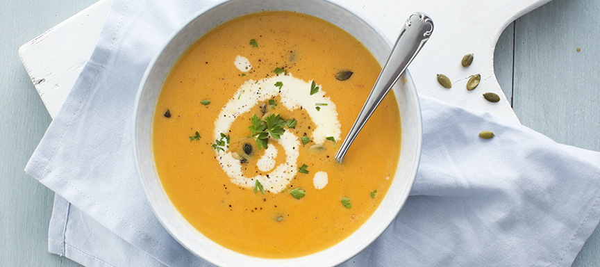

Pompensoep

Ingrediënten
- 400 gr pompoen
- 700 ml water
- 2 tomaten
- 1 ui
- 100 ml room
- 1 blokje groentenbouillon
- Boter of olie om in te bakken
- Pompenpitten om te garneren
- Peterselie om te garneren
Bereiding
- Snijd de pompoen in stukken en verwijder de schil of gebruik een zakje of doosje kant en klare pompoenblokjes. Zet een pan op het vuur en verhit de boter of olie en voeg de stukken pompoen toe. Snijd de ui en tomaten grof en doe deze ook in de pan. Bak ongeveer 3 minuutjes en giet er dan het water bij.
- Verkruimel het bouillonblokje boven de pan en breng aan de kook. Laat alles nu ongeveer 20 minuten koken op klein vuur. Pak de staafmixer en pureer alles tot een gladde soep. Voeg de room toe en mix alles nog een keer goed door. Zet nog 2 min op het vuur en serveer dan met wat peterselie, pompoenpitten en eventueel wat extra room.